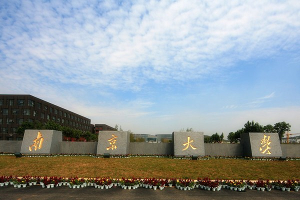
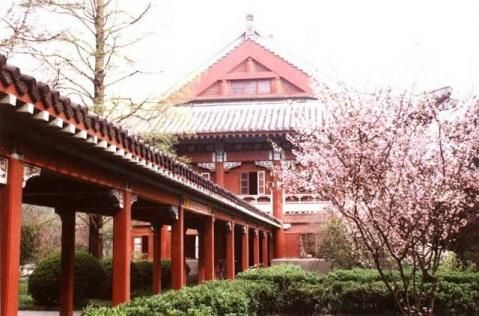
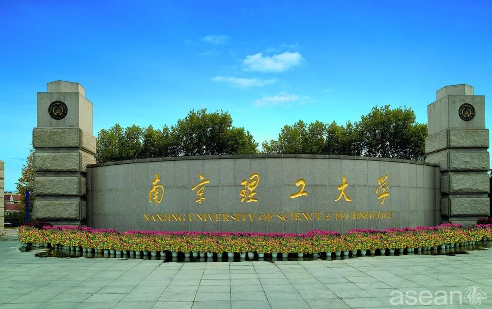

南京是中国高等教育资源最集中的五大城市之一，国家三大高等教育中心 ，国家四大科研教育中心，科教综合实力仅次于北京、上海，居全国第三位 ，拥有的 国家重点学科居全国第三位 ，2009年被推选为“中国最具教育发展力城市” ，2011中国高等教育重镇排行仅次京沪 。南京高等教育毛入学率为61%，人均受教育超过14年，从南京走出的两院院士近200人。截至2016年，在宁工作的 两院院士81人，每万人中大学生数量超过1100人 ，普通高等学校共有53所，在校大学生71.74万人，在校研究生11.04万人 ，每万人拥有在校大学生数量居中国第一，每万人拥有在校研究生数量居中国第二，在南京的中国科学院和中国工程院院士数量居全国第三。国家“千人计划”特聘专家87名，仅次于北京、上海 。 111计划高校8所及学科24个，仅次于北京。 南京有 仙林大学城、 江宁大学城和 浦口大学城，主城内不少高校将新校区建在大学城内，而位于主城的老校区主要供研究生使用。 |
|
|  |  |
|  | |